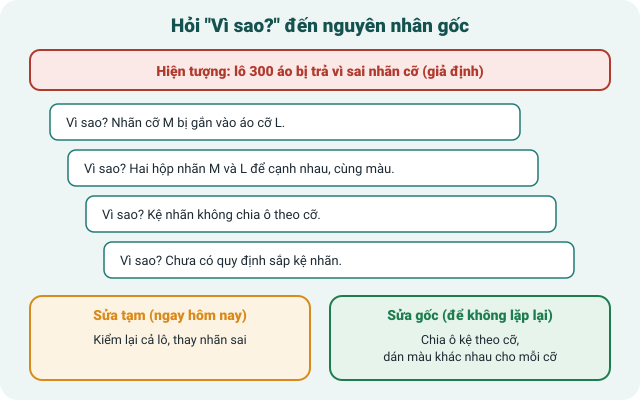

K3 · Giải quyết vấn đề và ra quyết định › Bậc 3 Vững vàng
Tìm nguyên nhân gốc trước khi sửa, không chỉ xử lý triệu chứng
Bài này làm Tờ 4: Phiếu sự cố. Mẫu in. Bài nối tiếp Mô tả vấn đề và đưa phương án (Bậc 2).
1. Mục tiêu
- Dùng chuỗi câu hỏi "Vì sao?" để đi từ hiện tượng đến một nguyên nhân sửa được.
- Tách sự cố thành sửa tạm và sửa gốc, mỗi việc có người làm và hạn.
2. Khởi động truy xuất
- Bốn bước xử lý yêu cầu của khách là gì?
- Khi khách đòi điều ngoài quyền hạn, bạn nói gì?
Đáp án
- Nghe hết; xác nhận; phương án và hạn; theo dõi.
- Chuyển đề nghị lên người có quyền, kèm thời điểm báo lại khách.
Xem lại: Phục vụ khách hàng.
3. Giải thích
Khi có sự cố, ta hay sửa ngay chỗ thấy hỏng. Việc đó cần làm. Nhưng nếu dừng ở đó, sự cố sẽ lặp lại.
Triệu chứng và nguyên nhân gốc. Triệu chứng là điều ta nhìn thấy. Nguyên nhân gốc là điều làm sự cố xảy ra. Sửa nó thì sự cố không lặp lại.
Hỏi "Vì sao?" nhiều lần. Bắt đầu từ hiện tượng. Mỗi câu trả lời lại hỏi tiếp "Vì sao?". Thường sau 3–5 lần, bạn gặp một quy trình, công cụ hay cách sắp xếp có thể sửa.

Ba lưu ý khi hỏi "Vì sao?":
- Hỏi về quy trình, không hỏi về người. "Vì sao Lan gắn nhầm?" dễ dừng ở "Lan cẩu thả". Hỏi "Vì sao nhãn dễ bị gắn nhầm?" sẽ đi xa hơn.
- Kiểm bằng số liệu. Mỗi câu trả lời là một giả thuyết. Hãy kiểm: lỗi xảy ra ở ca nào, máy nào, bao nhiêu lần?
- Dừng ở chỗ sửa được. Nguyên nhân như "thiếu người" thường ngoài tầm. Hãy tìm thêm nguyên nhân bạn hoặc nhóm có thể sửa.
Phiếu sự cố
- Hiện tượngCái gì, ở đâu, khi nào, bao nhiêu.
- Chuỗi "Vì sao?"Mỗi câu có số liệu kiểm.
- Sửa tạmChặn hậu quả ngay hôm nay.
- Sửa gốcAi làm, hạn khi nào, kiểm lại sau bao lâu.
Người mới có thể chưa có quyền sửa gốc. Bạn vẫn làm được phiếu và đề xuất. Việc đó cho thấy năng lực ở Bậc 3.
4. Ví dụ tại nơi làm việc Việt Nam
Tình huống giả định. Nam làm nhân viên kiểm hàng được 2 tháng ở một xưởng may tại Long An. Một lô 300 áo bị khách trả vì gắn sai nhãn cỡ.
Tổ trưởng định nhắc nhở người gắn nhãn rồi thôi. Nam xin 30 phút làm phiếu sự cố.
Nam đếm: 41 áo sai, đều là cỡ L gắn nhãn M. Không có lỗi ngược lại. Nam ra kệ nhãn. Hộp M và L để sát nhau, nhãn cùng màu trắng. Kệ không chia ô. Nam hỏi chị quản lý kho: chưa có quy định sắp kệ nhãn.
Nam đề xuất. Sửa tạm: kiểm lại cả lô, thay nhãn trong hôm nay. Sửa gốc: chia ô kệ theo cỡ, dán băng màu mỗi cỡ một màu, kho làm trước thứ Sáu. Sau 2 tuần, kiểm lại số áo sai nhãn.
Hai tuần sau, không còn áo sai nhãn cỡ.
Vì sao cách này tốt: Nam hỏi về cách sắp kệ, không đổ lỗi cho người. Số liệu "chỉ L thành M" giúp tìm đúng chỗ. Lời giải có hạn và có bước kiểm lại.
5. Thực hành
Tình huống giả định. Bạn làm chăm sóc khách hàng ở một chuỗi tiệm giặt sấy tại Hà Nội. Tháng này có 12 khách phàn nàn nhận nhầm đồ. Bạn xem sổ: 10 trong 12 lần xảy ra vào ca tối. Ca tối chỉ có 1 người, vừa nhận đồ vừa trả đồ. Túi đồ được ghi tên khách bằng bút dạ, hay bị nhòe khi ướt.
Làm phiếu sự cố: hiện tượng, chuỗi "Vì sao?", sửa tạm, sửa gốc.
Gợi ý 1
Số liệu "10 trong 12 lần ở ca tối" cho bạn biết nên hỏi "Vì sao?" ở đâu.
Gợi ý 2
"Ca tối thiếu người" có thể khó sửa ngay. Có nguyên nhân nào khác sửa được với chi phí thấp?
Lời giải mẫu
- Hiện tượng: 12 lần trả nhầm đồ trong tháng, 10 lần ở ca tối.
- Vì sao? Nhân viên đọc sai tên trên túi.
- Vì sao? Tên viết bút dạ, bị nhòe khi túi ướt.
- Vì sao? Chưa có cách đánh dấu túi không phai.
- Sửa tạm: gọi xin lỗi và đổi lại đồ cho 12 khách trong tuần này.
- Sửa gốc (đề xuất): dùng thẻ nhựa đánh số, khách giữ một nửa. Quản lý quyết, thử 2 tuần ở một tiệm, rồi đếm lại số lần nhầm.
Ghi chú: "1 người ca tối" cũng là nguyên nhân có thể. Nêu trong phiếu để quản lý cân nhắc.
(Số liệu là giả định.)
6. Tự kiểm tra
Chọn đáp án. Mỗi lựa chọn đều có giải thích.
Câu 1. Quán cà phê liên tục hết sữa tươi vào chiều thứ Bảy. Việc nào là sửa gốc?
-
Chưa đúng. Đây là sửa tạm. Chặn hậu quả hôm nay nhưng tuần sau vẫn hết.
-
Đúng. Đúng. Dùng số liệu để sửa cách đặt hàng, nên sự cố không lặp lại.
-
Chưa đúng. Cách này đổi chất lượng đồ uống, không xử lý chuyện đặt thiếu.
Câu 2. Câu hỏi nào giúp đi tới nguyên nhân gốc tốt hơn?
-
Chưa đúng. Câu hỏi về người thường dừng ở việc trách, không tìm ra chỗ sửa.
-
Đúng. Đúng. Hỏi về quy trình giúp tìm ra điều có thể sửa để không lặp lại.
-
Chưa đúng. Câu này đánh giá mức độ, không giúp tìm nguyên nhân.
Câu 3. Bạn đoán lỗi in hóa đơn do máy cũ. Bước tiếp theo nên là gì?
-
Chưa đúng. Đây mới là giả thuyết. Chưa kiểm thì có thể tốn tiền mà lỗi vẫn còn.
-
Đúng. Đúng. Số liệu xác nhận hoặc loại bỏ giả thuyết trước khi quyết định.
-
Chưa đúng. Chưa kiểm thì chưa chắc là nguyên nhân gốc.
Câu 4. Bạn là người mới, chưa có quyền đổi quy trình. Bạn làm gì với nguyên nhân gốc tìm được?
-
Chưa đúng. Bạn vẫn có thể đề xuất. Đây là cách cho thấy năng lực ở Bậc 3.
-
Chưa đúng. Đổi khi chưa có quyền có thể gây xung đột hoặc lỗi khác.
-
Đúng. Đúng. Người có quyền quyết dựa trên phiếu có số liệu của bạn.
7. Phản tư
- Một sự cố ở chỗ bạn cứ lặp lại là gì? Mọi người đang sửa tạm hay sửa gốc?
- Lần gần nhất bạn hỏi "Ai làm sai?", câu hỏi về quy trình sẽ là gì?
8. Áp dụng thật
Trong 7 ngày tới, chọn một sự cố nhỏ ở chỗ làm. Làm Tờ 4, có ít nhất một số liệu kiểm. Gửi đề xuất sửa gốc cho người phụ trách, dùng cách viết của bài Mô tả vấn đề và đưa phương án.
9. Siêu dữ liệu
| skill | K3 · Giải quyết vấn đề và ra quyết định |
|---|---|
| level | Bậc 3 · Vững vàng |
| group | N3 |
| framework_map | WEF: Analytical thinking; CSfW: 3c Identify and solve problems; SkillsFuture CCS: Problem Solving; Sense Making; NACE: Critical Thinking; LifeComp: L2 Critical thinking (chỉ dẫn chiếu) |
| updated | 2026-11-14 |
Hoàn thành bài
Đánh dấu đã học để site gợi ý lịch ôn sau 1, 3 và 7 ngày. Dữ liệu chỉ lưu trên máy của bạn.
Lịch ôn gợi ý: